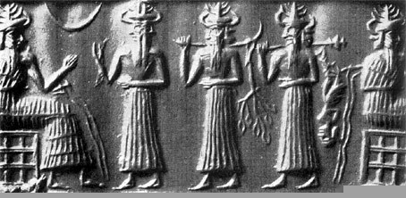
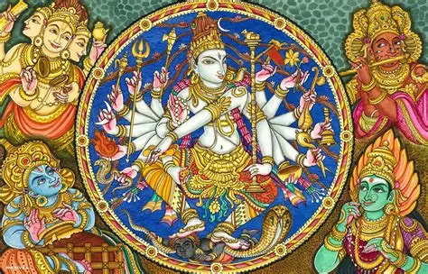
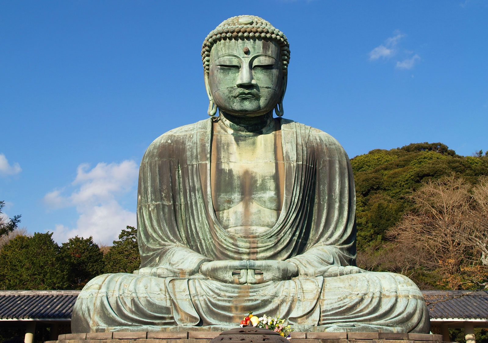
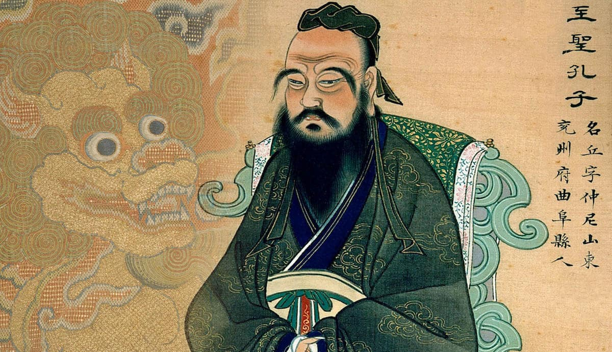
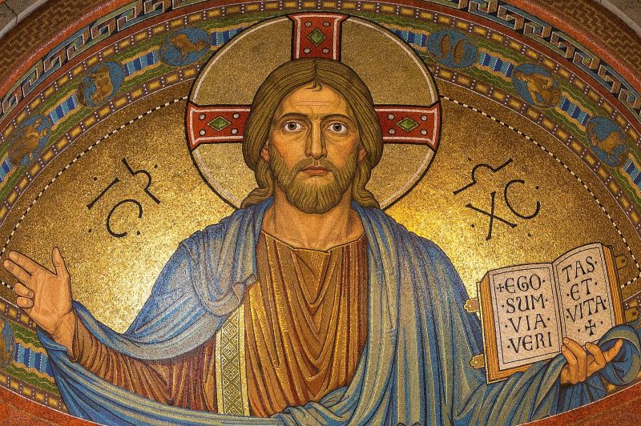
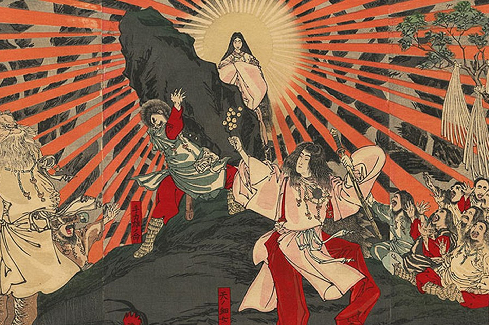
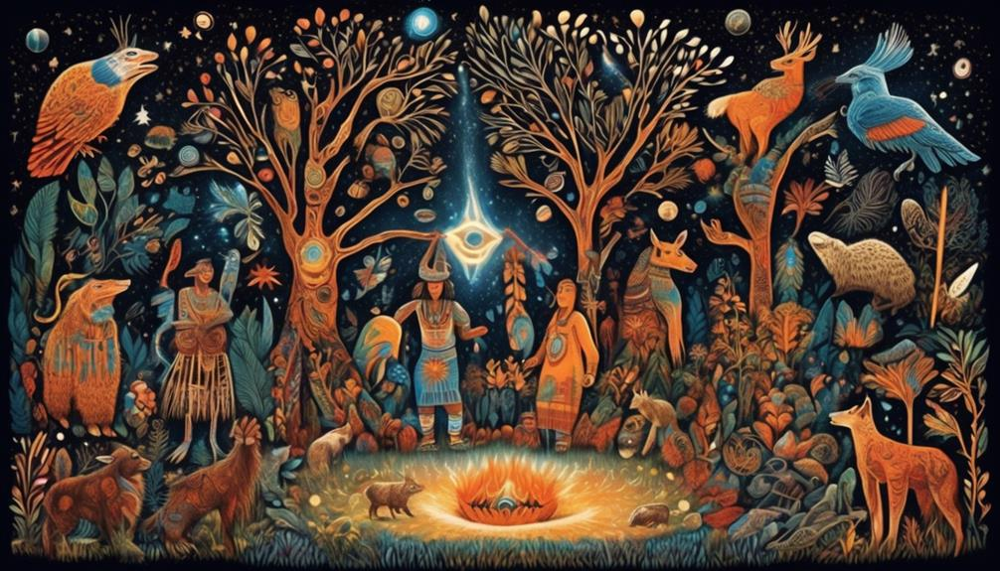

DISCLAIMER
This section introduces major religious traditions that have had significant
historical and cultural influence.
It does not aim to cover every denomination, sect, or local variation.
Religions are presented from a historical and cultural perspective for educational purposes only,
without promoting or judging any belief system.
本セクションでは、歴史的・文化的に大きな影響を与えてきた主要な宗教を中心に紹介している。
すべての宗派や教義、地域的差異を網羅するものではない。
宗教は学習・理解を目的として、歴史的・文化的観点から扱っており、
特定の信仰を推奨または評価する意図はない。
Animism
アニミズム
Era: Prehistoric period (before written history)
Region: Global (early human societies worldwide)
Spiritual Focus: Spirits of nature and ancestors
Animism is one of the earliest religious worldviews, centered on the belief that natural objects and
places—such as animals, forests, rivers, mountains, and weather—possess spiritual presence.
Communities often practiced rituals to maintain harmony with these spirits and with ancestors,
seeking protection, good harvests, and balance. Animistic traditions shaped myths, taboos, seasonal
ceremonies, and healing practices, and remain important in many indigenous and folk religions
worldwide.
年代: 先史時代（文字記録以前）
地域: 世界各地（初期の人類社会）
信仰対象: 自然霊・祖霊
アニミズムは、人類最古級の信仰形態であり、動物・森・川・山・天候などの自然物や場所に霊的存在が宿ると考える。人々は儀礼や供物を通じて自然や祖先との調和を保ち、守護や豊作、共同体の安定を願った。神話、禁忌、季節祭、治療儀礼などの文化を形づくり、現在も多くの先住民宗教・民間信仰に影響を残している。
0
♥
Ancient Polytheistic Religions
古代多神教

Era: Ancient period (c. 3000 BCE and earlier)
Region: Mesopotamia, Egypt, Greece, Rome, etc.
Deities: Multiple gods tied to nature, cities, and human life
Ancient polytheistic religions worshipped many gods, each linked to forces of nature, social order,
war, fertility, wisdom, and the afterlife. Worship often focused on temples, priesthoods, public
festivals, and offerings, and many states treated religion as a foundation of political legitimacy.
Myths explained the origin of the world and justified kingship, while monumental temples and rituals
reinforced community identity. These religions shaped art, law, and daily life across ancient
civilizations.
年代: 古代（紀元前3000年頃〜）
地域: メソポタミア・エジプト・ギリシャ・ローマなど
神々: 自然・都市・生活に結びつく多数の神々
古代多神教は、自然現象や社会秩序、戦争、豊穣、知恵、死後の世界などを司る多くの神々を信仰した。神殿、祭司制度、公共祭礼、供物が中心となり、国家は宗教を統治の正当性の基盤として利用することも多かった。神話は世界の起源や王権を説明し、巨大建築と儀礼は共同体の結束を強めた。芸術や法、生活習慣にまで深く影響した重要な宗教体系である。
0
♥
Hinduism
ヒンドゥー教

Era: c. 2000 BCE and earlier (gradual formation)
Region: Indian subcontinent
Deities: Brahman, Vishnu, Shiva, Devi (varies by tradition)
Hinduism is a diverse religious tradition shaped over many centuries rather than founded by a single
person. It includes belief in karma (moral causation), dharma (duty and ethical order), and moksha
(liberation), expressed through many schools and devotional paths. Worship may involve temples,
household rituals, festivals, and sacred texts such as the Vedas and epics. Hinduism deeply
influenced South Asian society, philosophy, art, and political culture, and remains one of the
world’s largest living religions.
年代: 紀元前2000年頃以前（長い時間をかけて形成）
地域: インド亜大陸
主な神格: ブラフマン、ヴィシュヌ、シヴァ、デーヴィー（伝統により異なる）
ヒンドゥー教は特定の開祖を持たず、長い歴史の中で多様な信仰と思想が重なって成立した宗教である。カルマ（業）やダルマ（義務・秩序）、モークシャ（解脱）などの概念が中心にあり、学派や信仰形態も幅広い。寺院礼拝や家庭儀礼、祭り、ヴェーダや叙事詩などの聖典が重要で、南アジアの社会制度、哲学、芸術、政治文化に深い影響を与えてきた。
0
♥
Buddhism
仏教

Era: c. 5th century BCE
Region: South Asia → East & Southeast Asia
Founder: Siddhartha Gautama (the Buddha)
Buddhism teaches that suffering arises from desire and ignorance, and that liberation can be
achieved through ethical conduct, meditation, and wisdom. It emphasizes compassion, discipline, and
awareness of impermanence rather than devotion to a creator god. Over time, Buddhism formed monastic
communities, scriptures, and diverse traditions, spreading across Asia through trade, missions, and
state patronage. It influenced philosophy, art, education, and social ethics, becoming a major
spiritual and cultural force in many societies.
年代: 紀元前5世紀頃
地域: 南アジア → 東アジア・東南アジア
開祖: ゴータマ・シッダールタ（仏陀）
仏教は、欲望や無知が苦しみを生むとし、戒・瞑想・智慧によって解脱に至ると説く。創造神への信仰よりも、慈悲と自己修養、無常の理解を重視する点が特徴である。僧団や経典が整備され、多様な宗派が生まれ、交易や布教、国家の保護によってアジア全域へ広がった。哲学、芸術、教育、倫理観に大きな影響を与えた世界宗教である。
0
♥
Taoism (Daoism)
道教
Era: c. 4th–3rd century BCE (as tradition forms over time)
Region: China → East Asia
Deities: Varied pantheon; focus on the Dao and harmony with nature
Taoism is a Chinese religious and philosophical tradition centered on living in harmony with the Dao
(the Way), emphasizing naturalness, balance, and non-forcing (wu-wei). As a religion, it developed
temples, priests, rituals, and practices for health and longevity, including meditation and internal
cultivation. Taoism influenced Chinese culture through festivals, folk beliefs, and ideas about
nature and governance, and it interacted deeply with Buddhism and Confucian traditions across East
Asia.
年代: 紀元前4〜3世紀頃（伝統として形成）
地域: 中国 → 東アジア
神々: 多様（中心は「道」と自然との調和）
道教は「道（タオ）」に従い、自然さ・バランス・無為自然（無理に押し進めない）を重視する中国の伝統である。宗教としては神観念や儀礼、道観（寺院）、祭司、養生法や修行が発達し、瞑想や内丹術などの実践も行われた。自然観や祭礼、民間信仰を通じて中国文化に深く根づき、仏教や儒教とも相互に影響しながら東アジアに広がった。
0
♥
Confucianism
儒教

Era: c. 5th century BCE
Region: China → East Asia
Founder: Confucius (Kongzi)
Confucianism is often described as a religio-ethical tradition that shaped social order through
values like filial piety, ritual propriety, and moral self-cultivation. While not centered on a
single creator deity, it developed ritual practices, ancestral rites, and state ceremonies that
functioned like religious life in many societies. Confucian ideals influenced education, law, family
structure, and bureaucratic governance for centuries, becoming a major cultural foundation across
East Asia and shaping how authority and morality were understood.
年代: 紀元前5世紀頃
地域: 中国 → 東アジア
開祖: 孔子（コンフュシウス）
儒教は、孝や礼、徳による自己修養を通じて社会秩序を整える宗教的・倫理的伝統として理解されることが多い。創造神を中心にしない一方で、祖先祭祀や国家儀礼などの「宗教的生活」を形成し、社会に深く根づいた。教育、法、家族観、官僚制統治に長期的影響を与え、東アジアにおける権威と道徳のあり方を形づくった重要な伝統である。
0
♥
Judaism
ユダヤ教
Era: c. 1st millennium BCE (roots earlier)
Region: Levant → diaspora worldwide
Deity: YHWH (the God of Israel)
Judaism is one of the earliest monotheistic religions, centered on covenant, law, and ethical
responsibility. Its scriptures and traditions shaped a strong communal identity through worship,
festivals, and practices such as Sabbath observance and dietary laws. Historically, Judaism had
profound influence on later Abrahamic religions, especially Christianity and Islam, and it
contributed foundational ideas about monotheism, moral law, and the relationship between faith and
community life.
年代: 紀元前1千年紀頃（起源はさらに古い）
地域: レヴァント → 世界各地（ディアスポラ）
神: ヤハウェ（イスラエルの神）
ユダヤ教は最古級の一神教であり、契約思想と律法、倫理的責任を中心とする。安息日や食規定、祭りなどの実践を通じて共同体の結束と信仰生活を維持してきた。キリスト教やイスラム教に大きな影響を与え、一神教的世界観や道徳律、信仰と共同体の関係に関する重要な基盤を提供した宗教である。
0
♥
Christianity
キリスト教

Era: 1st century CE
Region: Levant → Europe → global
Founder: Jesus Christ
Christianity centers on faith in Jesus Christ and the message of salvation, emphasizing love,
forgiveness, and moral transformation. Over time, it developed churches, sacraments, scriptures, and
diverse denominations, becoming a major spiritual and social institution. Christianity shaped
European and global history through education, art, law, and political legitimacy, influencing the
formation of states and cultural norms. Its global spread created one of the world’s largest
religious communities.
年代: 1世紀
地域: レヴァント → ヨーロッパ → 世界各地
開祖: イエス・キリスト
キリスト教はイエス・キリストへの信仰と救いの教えを中心に、愛や赦し、内面的変革を重視する。教会制度、聖礼典、聖書、教派が発展し、精神的・社会的な大きな制度となった。教育や芸術、法、政治的正当性に影響を与え、国家形成や文化規範にも深く関わった。世界的に広がり、最大規模の宗教共同体の一つを形成している。
0
♥
Islam
イスラム教
Era: 7th century CE
Region: Arabia → Middle East, Africa, Asia, beyond
Founder: Muhammad
Islam is a monotheistic religion centered on submission to the will of God (Allah) and guidance
revealed to Muhammad in the Qur’an. Core practices include prayer, charity, fasting, and pilgrimage,
forming a strong shared religious life across diverse societies. Islam shaped politics, law,
scholarship, and culture through the rise of caliphates and wide trade networks. Its intellectual
traditions contributed significantly to mathematics, medicine, astronomy, and philosophy, leaving
lasting global influence.
年代: 7世紀
地域: アラビア → 中東・アフリカ・アジアなど
開祖: ムハンマド
イスラム教は唯一神アッラーへの帰依を中心とし、クルアーン（コーラン）の啓示に基づく信仰を持つ一神教である。礼拝、喜捨、断食、巡礼などの実践が共同体の宗教生活を支える。カリフ制や交易網を通じて政治・法・学問・文化に影響を与え、数学・医学・天文学・哲学などの発展にも大きく貢献した。現在も世界規模で強い影響力を持つ宗教である。
0
♥
Shinto
神道

Era: Ancient period (formed gradually)
Region: Japan
Deities: Kami (spirits associated with nature and ancestors)
Shinto is Japan’s indigenous religious tradition centered on reverence for kami—sacred presences
linked to nature, places, and ancestral lines. Practices focus on purification, seasonal festivals,
shrine worship, and community rites rather than a single scripture or founder. Historically, Shinto
developed alongside Buddhism and influenced Japanese identity, arts, and political symbolism,
especially through shrine networks and public ceremonies. It remains a living tradition shaping
cultural customs and local community life.
年代: 古代（徐々に形成）
地域: 日本
神々: 神（自然や祖先に結びつく霊的存在）
神道は、自然や土地、祖先に関わる霊的存在である「神（かみ）」への敬意を中心とする日本の固有信仰である。開祖や単一の経典よりも、祓い（清め）、祭り、神社参拝、共同体儀礼が重視される。歴史的には仏教と共存しながら発展し、神社ネットワークや公的儀礼を通じて日本の文化、芸術、政治的象徴に影響を与えた。現在も生活習慣や地域社会に根づく信仰である。
0
♥
Indigenous / Folk Religions
先住民宗教・民間信仰

Era: Ancient to present (varies by region)
Region: Global (Africa, the Americas, Oceania, Asia, etc.)
Spiritual Focus: Local spirits, ancestors, sacred places, community rites
Indigenous and folk religions refer to diverse local traditions rooted in community, land, and
ancestral memory. They often emphasize rituals for healing, protection, fertility, and seasonal
change, guided by elders, shamans, or spiritual specialists. Many traditions blend with larger
religions over time while preserving local practices and identity. Historically, these religions
shaped oral history, art, and social norms, and they remain vital for cultural heritage and
community life across many regions today.
年代: 古代〜現在（地域により異なる）
地域: 世界各地（アフリカ、アメリカ大陸、オセアニア、アジアなど）
信仰対象: 土地の霊・祖霊・聖地・共同体儀礼
先住民宗教・民間信仰は、土地や共同体、祖先の記憶に根ざした多様な地域宗教の総称である。治癒や守護、豊穣、季節の変化に関する儀礼が重視され、長老やシャーマンなどの宗教的専門家が役割を担うことも多い。大宗教と混淆しながらも、地域固有の実践とアイデンティティを保ってきた。口承文化、芸術、社会規範を形づくり、現代でも文化遺産と共同体生活の重要な基盤となっている。
0
♥